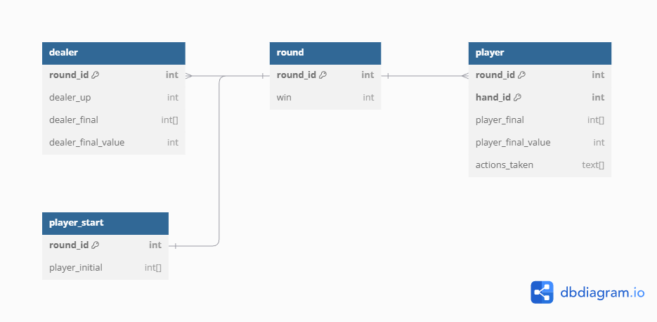

Blackjack Game Analysis
Overview
In this project, I will be analyzing 5 million simulated hands of Blackjack. I will go over my process for transforming and loading the data, as well as share my findings from these games.
Goal
My goal is to gain a deeper understanding of Blackjack strategies, odds, and outcomes. By exploring these statisitics, I will be able to make a determination on which values are good/bad for the player/dealer. I will be exploring these questions:
- Which dealer's face up card has the greatest winning percentage?
- Which player's starting hand has the greatest winning percentage?
- Which player's ending total has the greatest winning percentage?
- What kind of win/loss ratio can we expect from a player who uses basic strategy?
Tech Stack
- Python / Pandas (Data Transformation)
- dbdiagram.io (Data Modeling / Database Design)
- Excel (Data Storage)
- PostgreSQL (Data Storage)
- PowerBI (Visualization / Data Transformation)
Dataset
Originally, I wanted to create my own Python script to simulate a number of hands of Blackjack. However, as I am focusing more on the analysis aspect, I opted to instead explore Kaggle for accessible datasets. I found a dataset that contained 50 million simulated hands of Blackjack. Here is the link to the dataset: 50 Million Hands of Blackjack. There were several columns, but I focused only on these:
- dealer_up (int - dealer's initial face up card)
- initial_hand (list[ ] - the player's initial two cards)
- dealer_final (list[ ] - the dealer's final cards)
- dealer_final_value (int - the dealer's total ending value)
- player_final (list[ ][ ] - the player's final cards)
- player_final_value (int - the player's total ending value)
- actions_taken (list[ ][ ] - the action's taken by the player)
- win (float - the multiplier of the player's initial bet)
This data was simulated using the most common set of rules in Las Vegas casinos. More information can be found on the Kaggle page.
Data Modeling / Database Design
I planned on loading the .csv file straight into PowerBI, but I had worries concerning how large this dataset was. The .csv was almost 4GB large containing over 50 million rows. I decided to go with a more scalable approach and loaded the data into a PostgreSQL database, a common industry choice. Utilizing PostgreSQL's /COPY command to load the data into the database was the most efficient way to do this. The was a much faster approach rather than using Python to write to the database.
The data in the .csv looked like this:
| dealer_up | initial_hand | dealer_final | dealer_final_value | player_final | player_final_value | actions_taken | win |
|---|---|---|---|---|---|---|---|
| 6 | [3, 3] | [6, 10, 10] | 26 | [[3, 2, 10], [3, 4, 5]] | [15, 12] | [['P', 'H', 'S'], ['H', 'S']] | 2 |
The more I started to plan how my schema would look, the more I realized it was not going to be as simple as writing each row to the database. The main issue was the nested lists in the player_final and actions_taken columns. It would be difficult to analyze the data in PowerBI, so I had to normalize my database. I split the data into 4 tables: dealer, player, player_start, and round.
Using dbdiagram.io, I was able to create a quick database schema diagram to plan out my tables. Creating the PostgreSQL database can be found within a SQL file in the project's repository.
The information is now usable in PowerBI with the sample data looking like this in the database:
round
| round_id | win |
|---|---|
| 1 | 2 |
dealer
| round_id | dealer_up | dealer_final | dealer_final_value |
|---|---|---|---|
| 1 | 6 | [6, 10, 10] | 26 |
player
| round_id | hand_id | player_final | player_final_value | actions_taken |
|---|---|---|---|---|
| 1 | 1 | [3, 2, 10] | 15 | ['P', 'H', 'S'] |
| 1 | 2 | [3, 4, 5] | 12 | ['H', 'S'] |
player_start
| round_id | initial_hand |
|---|---|
| 1 | [3, 3] |
Now the data from the original .csv must be transformed in order to be able to load it properly in the PostgreSQL database.
Transformation
I will use Python / Pandas in order to transform the data. The original .csv will be split up into four different .csv files, each one being related to their respective table. The script can be found in the project's repository. The only thing to note within the script is changing the "[" and "]" to "{" and "}" respectively. This is because PostgreSQL takes in arrays in the form of "{" and "}".
Here is an example from the script:
dealer_df.loc[:, 'dealer_final'] = dealer_df['dealer_final'].astype(str).str.replace('[', '{').str.replace(']', '}')
Analysis
In this section, I will be answering the questions asked above by providing data visualizations and explanations for this data.
Which dealer's face up card has the greatest winning percentage?
According to the chart above, players going against a dealer's cards 3-6 have more than a 50% chance of winning. These low-value cards are the most favorable for the player as the chances of the dealer busting are higher. Since the dealer must hit if they have 16 or less, showing a 6 has the highest winning percentage. Assuming the dealer has a 10 face-down, them hitting and getting a card 6 or higher will bust them. Players seeing one of these face-up cards should be more aggressive in their play knowing these odds are in their favor.
Which player's starting hand has the greatest winning percentage?
Players should not only take a look at their hand, but also consider their hand in regards to the dealer. A combination of the information shown in the previous chart as well as the information directly above should further help shift the odds in the player's favor. The chart above shows that players with hands of high value, (e.g., 10/A, 10/10, 10/9) have the highest winning percentage. These hands are the most favorable for the player as they are close to 21. It then shifts to hands that have a high chance of being close to 21 after a hit: 11, 10, AA (after being split), and 9. Using basic strategy, players must assume the next card they hit will be a 10, explaining why these hands are the most favorable. These hands must be played aggressively the odds are in the player's favor.
Why is 21 not 100%?
Using the most commonly played Las Vegas rule set, players who get blackjack off of their starting hand has to wait until the dealer confirms they do not have blackjack as well. If they do, it is a push, indicating no win or loss.
Which player's ending total has the greatest winning percentage?
Similar to the previous chart, we can see that players ending on 19-21 have the highest chance to win with 18 also being a valuable total. We can see here that although 17 is a high number, it is beaten by values 12-14. This is because a hard 17 has a high chance of busting if the player hits. Players with 12-14 have a higher chance of hitting and getting a card that will not bust them. Only cards 8 and higher will make the player bust. Players with 17 should play more conservatively as the odds are not in their favor. With values 12-14, players can play more aggressively as the odds are in their favor.
What kind of win/loss ratio can we expect from a player who uses basic strategy?
Even after reviewing all the best strategies, numbers, and hands to play, the chart above shows the unfortunate outcomes a player will be faced with. Out of 5 million hands, ~50% of the games played will result in a loss, ~42% of games will result in a win, and ~8% will result in a tie.
Conclusion
By players using basic strategy, we can see the odds of winning are increased. Players should play aggressively when their initial cards total to 19-21 and when the dealer is showing low-value cards like 3-6. After doing a deep dive into this topic, we can see that players who decide to play should be aware that the odds are already not in their favor, no matter how well they play. The house always wins in the end with a 50% win rate. Discouraging as this may be, gambling should be done for fun and players should enjoy to play the game regardless of the outcome. Some players may even beat the odds and get lucky!
Reflection
I chose this topic as it was something I had an interest in. The biggest areas of work that I had to focus on during this project were the data modeling and database design. A database was required in order for this project to be scalable and efficient so I spent a lot of time making sure my schema was correct. This project helped me work on those database skills as well as giving me more practice using Pandas and PowerBI. If I were to restart this project, I would definitely look into creating my own blackjack simulator in order to create the correct dataset I need right away. I look forward to polishing this project even further, diving deeper into the dataset and answering more in-depth technical blackjack questions.